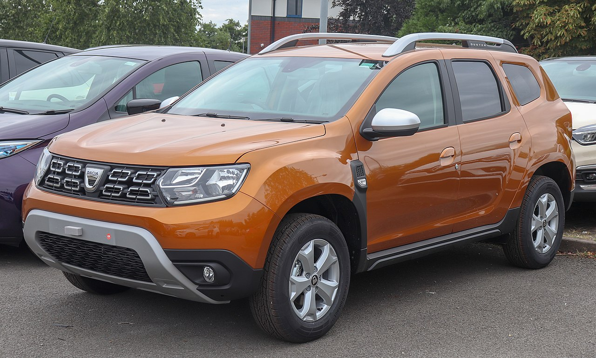

Dacia Duster
Dacia Duster este un SUV construit în comun de producătorul francez Renault și filiala sa românească Dacia din 2010. În prezent se află la a doua generație lansată în toamna anului 2017 și a fost comercializată ca Renault Duster pe anumite piețe, cum ar fi India, Iran, Kazahstan, Rusia, Mexic, Egipt, Africa de Sud, Ucraina, Emiratele Arabe Unite și America de Sud. Prima sa generație a fost, de asemenea, vândută ca Nissan Terrano în Rusia și India. Este al treilea model al mărcii Dacia bazat pe platforma Logan, după Sandero.
Un pick-up cu patru uși bazat pe Duster a fost lansat la sfârșitul anului 2015 în America de Sud, comercializat ca Renault Duster Oroch.
Prima generatie
Dacia Duster a fost inițial introdus în versiunea de curse de gheață pregătită pentru trofeul Andros, prezentată pentru prima dată pe 17 noiembrie 2009. Versiunea de producție a fost dezvăluită mass-media la 8 decembrie 2009 și a fost lansată ulterior la Salonul Auto de la Geneva din martie 2010.

Bazat pe platforma B0, modelul Duster are o lungime de 4,31 metri (169,7 in), o lățime de 1,82 metri (71,7 inci) și are o distanță de 210 mm (8.3 inci) de la sol. Spațiul său de bagaje are un volum de până la 475 litri (16,8 cu ft), în timp ce cu bancheta posterioară pliată și înclinată înainte, capacitatea sa de transport poate depăși 1600 litri.
Dusterul este oferit cu tracțiune integrală sau 4x2. Variantele 4x4 utilizează sistemul de tracțiune integrală de pe Nissan Qashqai, care permite șoferului să aleagă din trei moduri diferite de conducere: Auto - în care tracțiunea pe spate este acționată automat în cazul în care roțile din față pierd aderență, Lock - prin care 50% din cuplul este alimentat în mod constant prin puntea spate și 2WD -în cazul în care transmisia este blocată în transmisia față pentru o eficiență maximă a consumului de combustibil.
În septembrie 2013, Dacia Duster facelift a fost prezentată la Salonul Auto de la Frankfurt. Exteriorul a primit schimbări importante; în față o nouă grilă cromată și faruri reproiectate, bare de acoperiș restabilite, roți noi de 16 inchi și modificări modeste în spate. Interiorul a fost, de asemenea, reînnoit, cu design și caracteristici similare cu cele introduse anul trecut pe noile modele din gama Dacia. A fost introdus un nou motor turbo TCe 125 de 1.2 litri cu injectie directă.
A doua generație
A doua generație a fost prezentată între 14 și 24 septembrie 2017 în cadrul Salonului Auto de la Frankfurt. Automobilele au ajuns pe piața românească cu șase săptămâni mai târziu în noiembrie 2017.
Noul model are aproape aceeași lungime și vine cu cinci locuri, spre deosebire de zvonurile pre-lansare că va fi disponibil un model cu șapte locuri. Este construit pe aceeași platformă B0, din prima generație. Dispune acum de servodirecție electrică, un sistem de camere MultiView care este alcătuit din patru camere, sistem de avertizare unghi mort, climatizare automată, sistem de aprindere și intrare fără cheie. Garda la sol a fost mărită și a fost oferit și un sistem de asistență pentru pornirea în pantă, precum și controlul coborârii în pantă. Designul interior a fost revăzut, iar zgomotul interior a fost redus la jumătate față de generația anterioară. Nivelul de echipare de top include jante de 17 inch (430 mm). 
Dispune de aproape același volum de încărcare de 445 litri pentru versiunile 4x2, sau 376 litri pentru versiunile cu tracțiune integrală și un spațiu total de depozitare dedicat de 28,6 litri.
Acesta păstrează versiunile tweaked ale aceleiași motoare diesel de 1.5 litri și 1.6 și 1.2 pe benzină ca model de ieșire. Dieselul poate fi cuplat la o transmisie automată cu dublă ambreiaj (EDC). Deși este aproape identic din punct de vedere al dimensiunilor, conform șefului de design al mărcii, Laurens van den Acker, fiecare panou al caroseriei este nou.